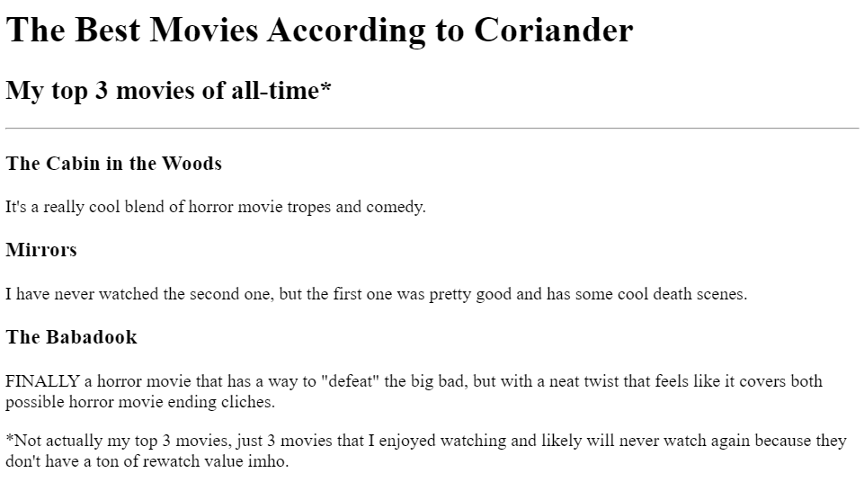
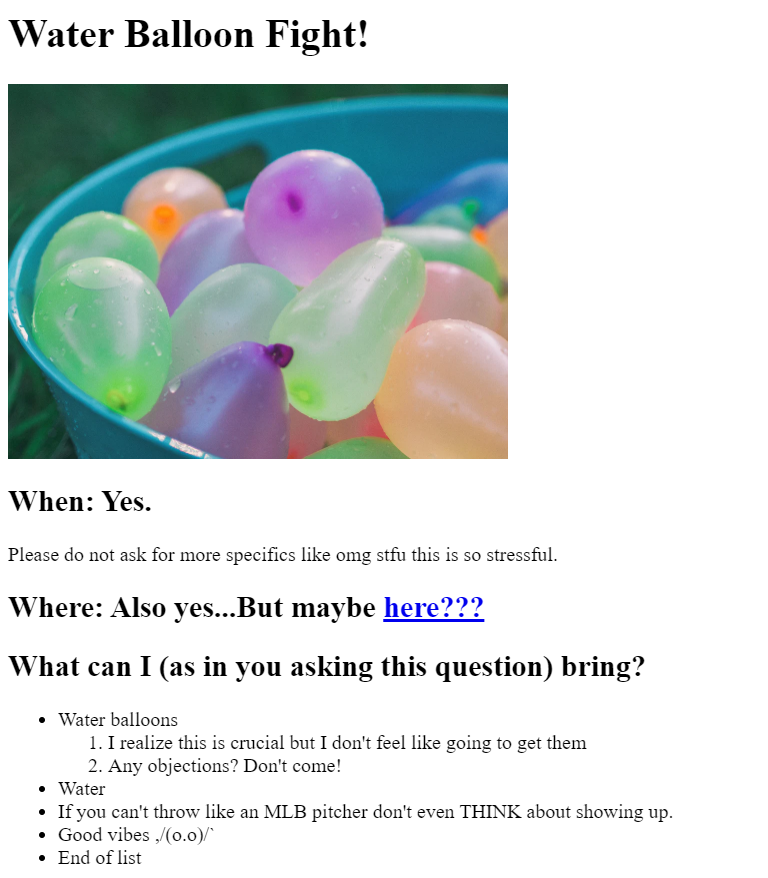

Coriander is the Greatest Web Developer
Let it be known that this is for fun because Coriander Cilantro Montague refuses to take life too seriously.
Click here to see more of what's already pictured in the screenshot (below)!

Click here to get the raddest invite of the century (jk it's just an example of an invite website/page)!

Learn more about me
mwah
;*
Want to contact me? Why?! What could you possibly want???